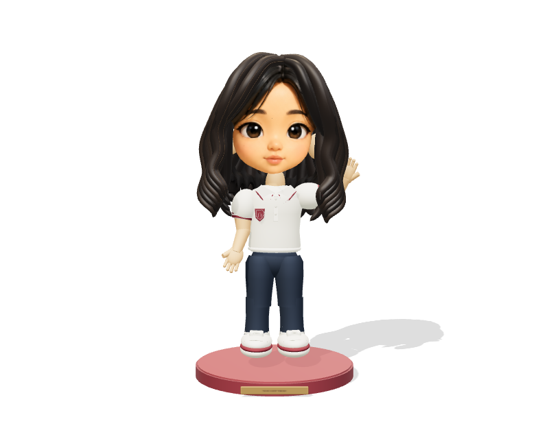

About / Mandy Yi
Notice. Build.
Question.
Things I notice, make, and come back to.

01 / Making
Ideas into experiments.
Creative coding, interactive art, and the process of turning an idea into something I can test.
Explore my projects ↗ 02 / MovementOn the court. On the water.
Tennis and rowing: effort, focus, routine, and the changes that come from staying with something.
Explore sport ↗ 03 / ObservationA closer look.
Photography is a way to slow down and notice light, places, and small details.
View photographs ↗